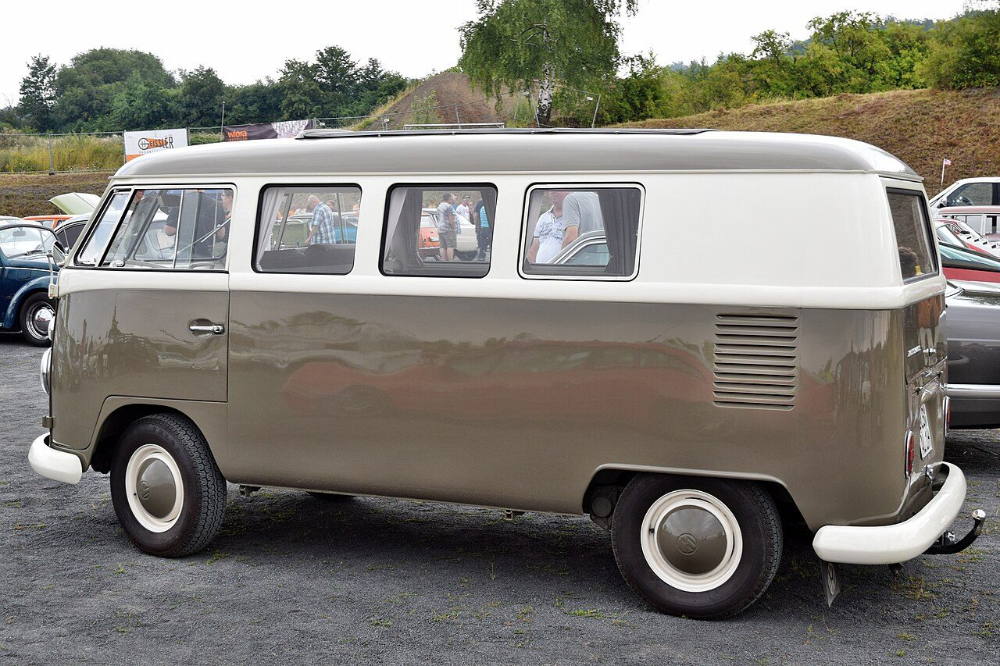
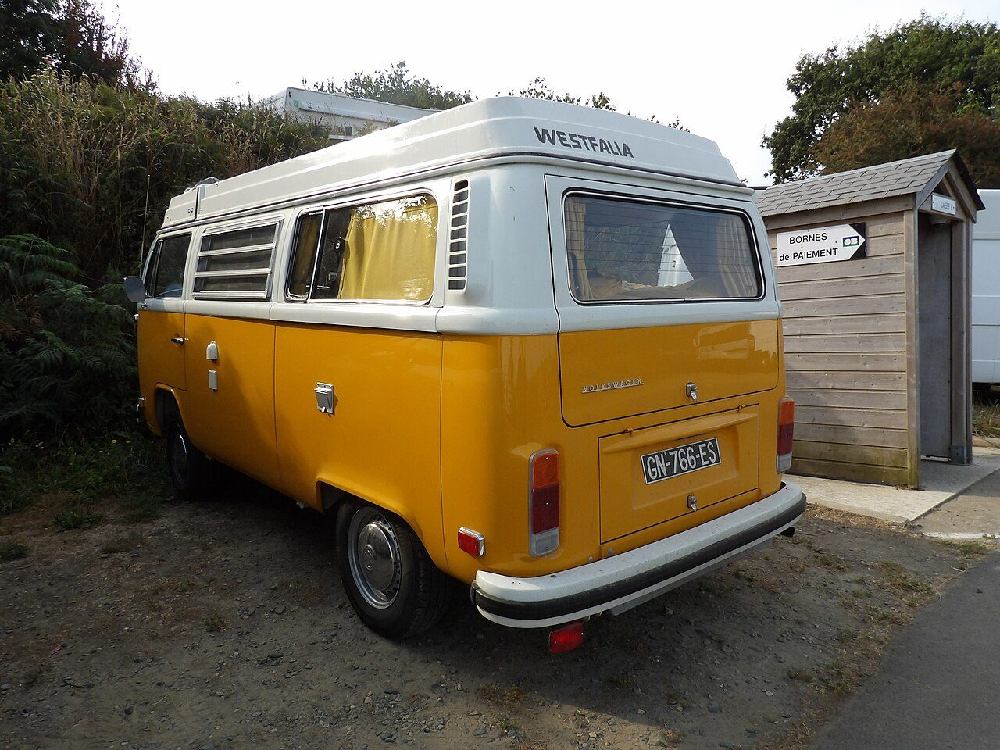
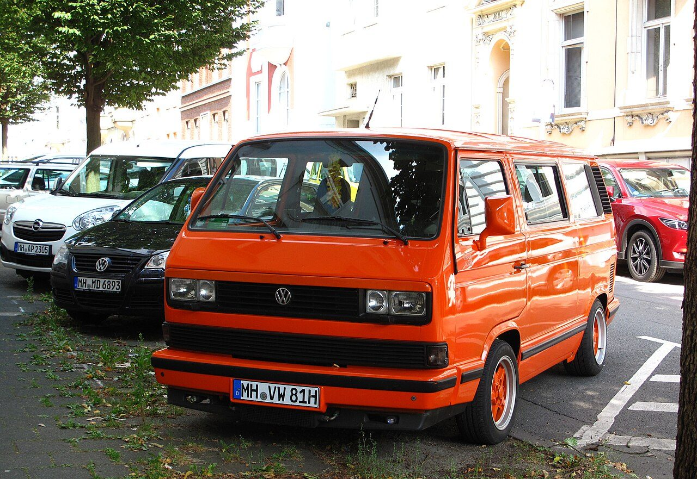
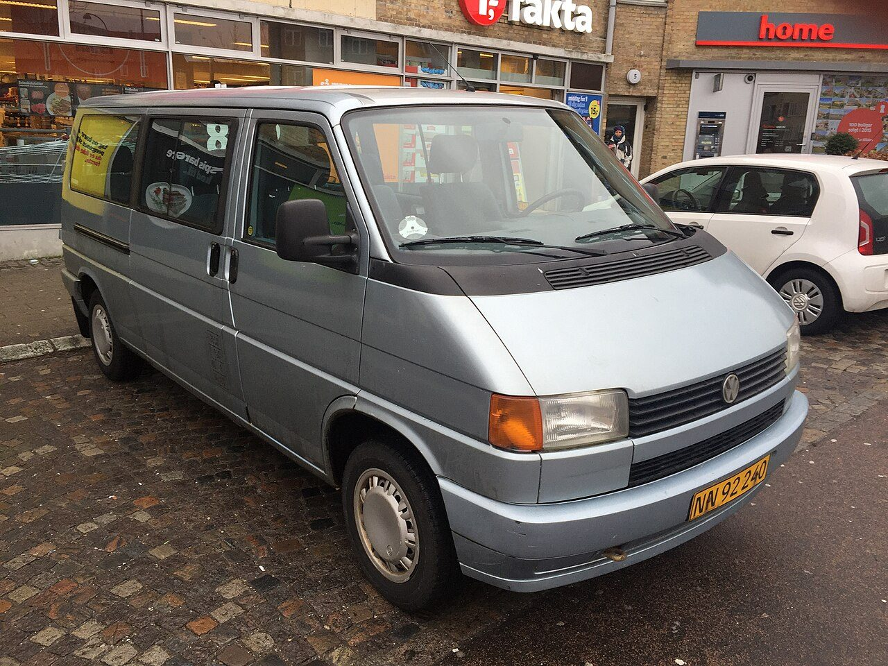
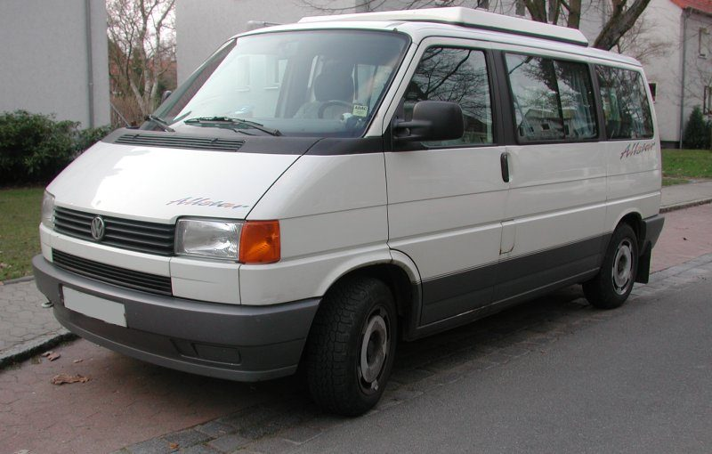
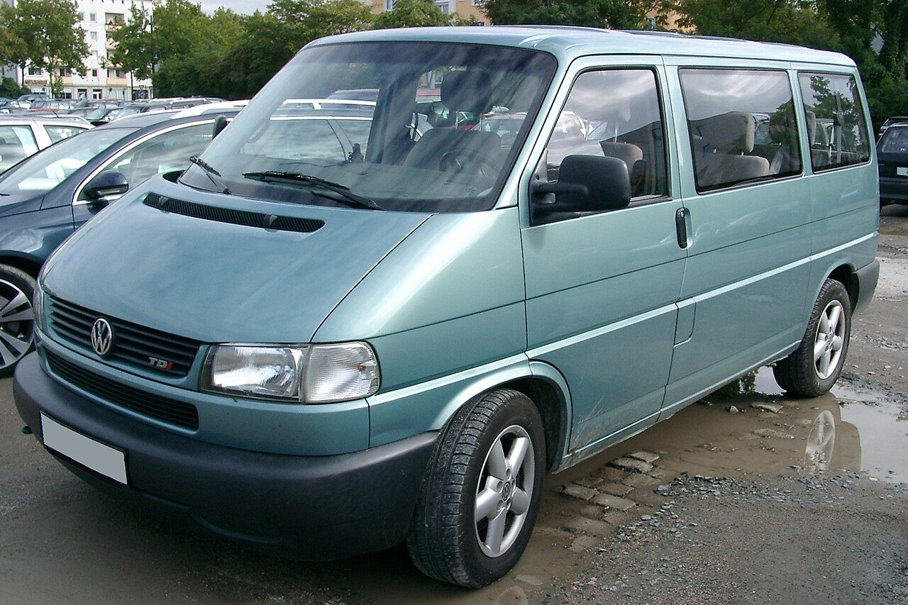

Der T4
- Bauzeit
- 08/1990 – 06/2003Vorgänger T3, Nachfolger T5
- Stückzahl
- rund 1,9 Millionen1994: 135.144
- Interne Bezeichnung
- Typ 70ab 1996 auch 7D
- Konzept
- Frontmotor quer, Frontantrieberster VW-Bus ohne Heckmotor
- Radstände
- 2920 und 3320 mmMultivan nur kurz
- Auszeichnung
- Van of the Year 1992cw-Wert 0,36
Vorgänger und Neuanfang
T1 bis T3 hatten Heckmotor und Heckantrieb. Der T4 war eine vollständige Neukonstruktion mit Frontantrieb und tiefem, durchgehendem Ladeboden; Entwicklungskosten laut auto motor und sport rund zwei Milliarden DM.





Zeitleiste
Produktionsstart08/1990
Der T4 löst in Hannover den T3 ab. Zum Start drei Benziner und zwei Diesel, darunter der 2.4 D (AAB).
Multivan 2.4 D im Katalog1991
Grundpreis 45.385 DM. Im Herbst kommt Silbergrau Metallic (D7V).
Van of the Year, 1.9 TD, Allstar1992
August: 1.9 TD. Oktober: Sondermodell Allstar. In Nordamerika als EuroVan verkauft.
syncro und Aufstelldach1993
Allrad erst jetzt, weil bis dahin der T3 syncro lief. 1993/94 entstehen 9.667 T4 in Emden.
Classic, Wasserlack, neue Vakuumpumpe1994
Januar: Multivan Classic. Umstellung auf Wasserbasislack. Mai: geänderter Zylinderkopf mit neuer Vakuumpumpe am AAB. 135.144 Transporter gebaut.
Spannrolle am AAB, VW Nutzfahrzeuge eigenständig1995
Ab Februar spannt eine Spannrolle den Zahnriemen statt der Wasserpumpe. Im Herbst Beginn der 2.5-TDI-Fertigung.
Große Produktaufwertung01/1996
Multivan und Caravelle mit 8 cm längerem Vorderwagen, Scheibenbremsen hinten, Airbags, TDI und VR6.
AJA löst AAB ab1997–1998
Nachfolger AJA mit 75 PS und Oxidationskatalysator. Letzter AAB im September 1998.
Multivan II1999
Sitze der zweiten Reihe in Schienen verschieb- und drehbar; Kühlbox im Sitz entfällt.
Produktionsende06/2003
Nach rund 1,9 Millionen Fahrzeugen folgt der T5.
Kurzer und langer Vorderwagen
- Kurz (T4a)
- bis 12/1995gerade Haube, rechteckige Scheinwerfer, gelbe Blinker
- Lang (T4b)
- ab 01/1996Multivan und Caravelle, 8 cm länger, schräge Scheinwerfer
- Dieses Fahrzeug
- kurzer Vorderwagen
Kotflügel, Stoßfänger, Grill, Scheinwerfer und viele Fahrwerksteile unterscheiden sich.
Bilder

Produktion
- Hannover
- rund 1,7 MillionenStammwerk; alle syncro
- Emden
- 9.6671993/94
- Weitere
- Poznań, Brasilien
- Häufigster Motor
- 2.4 D (AAB)432.060 Stück
Fertigung pro Jahr
- 1990130.370
- 1991137.682
- 1992167.830
- 1993129.779
- 1994135.144
- 1995141.355
- 1996141.454
- 1997155.436
- 1998154.982
- 1999148.886
- 2000162.699
- 2001151.722
- 2002137.913
- 2003154.959
1990 einschl. T3, 2003 einschl. T5. Quelle: Volkswagen Chronik, nach T4-Wiki.
Stückzahlen nach Motor
| Motor | Stückzahl |
|---|---|
| 2.4 D (AAB) | 432.060 |
| 2.5 TDI 102 PS (ACV) | 391.850 |
| 1.9 D (1X) | 144.720 |
| 2.0 Benziner (AAC) | ca. 110.000 |
| 2.4 D mit Kat (AJA) | 74.460 |
| 1.8 Vergaser (PD) | 2.020 |
Quellen und Links
Wikipedia und T4-Wiki
Modelljahre
Modelljahr beginnt nach den Werksferien im Sommer; Kennzeichen ist die 10. Stelle der Fahrgestellnummer. Baujahr 1994 = Modelljahr 1994 (R) oder 1995 (S).
Tabelle
| Modelljahr | Gebaut | Zeichen |
|---|---|---|
| 1991 | 01.09.1990 – 30.09.1991 | M |
| 1992 | 01.10.1991 – 31.07.1992 | N |
| 1993 | 01.08.1992 – 31.07.1993 | P |
| 1994 | 01.08.1993 – 31.07.1994 | R |
| 1995 | 01.07.1994 – 31.07.1995 | S |
| 1996 | 01.07.1995 – 30.04.1996 | T |
| 1997 | 01.05.1996 – 30.04.1997 | V |
| 1998 | 01.05.1997 – 30.04.1998 | W |
| 1999 | 01.05.1998 – 30.04.1999 | X |
| 2000 | 01.05.1999 – 30.04.2000 | Y |
| 2001 | 01.05.2000 – 30.04.2001 | 1 |
| 2002 | 01.05.2001 – 30.04.2002 | 2 |
| 2003 | 01.05.2002 – 30.06.2003 | 3 |
Quellen und Links
Modelljahr im T4-Wiki